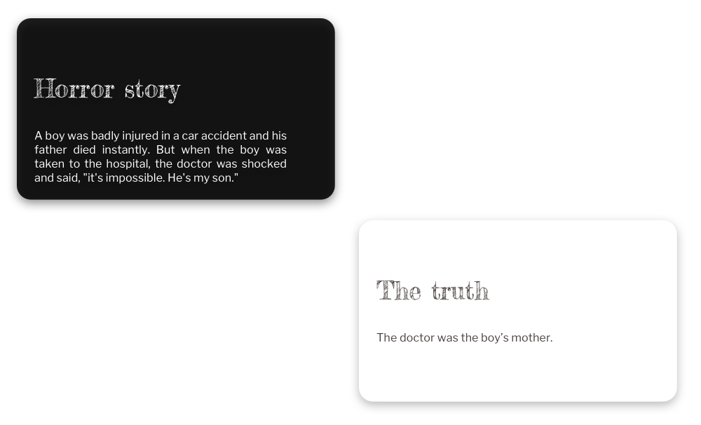
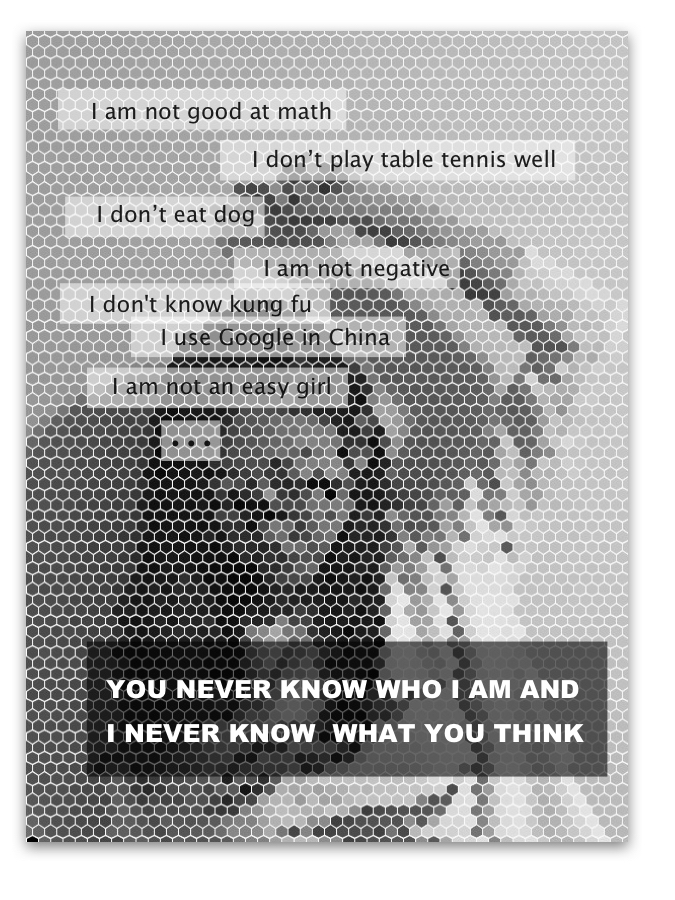
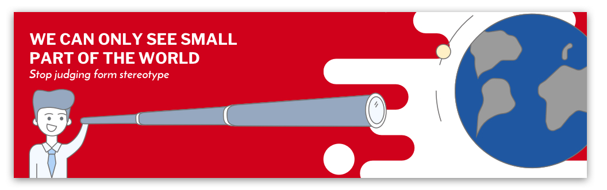
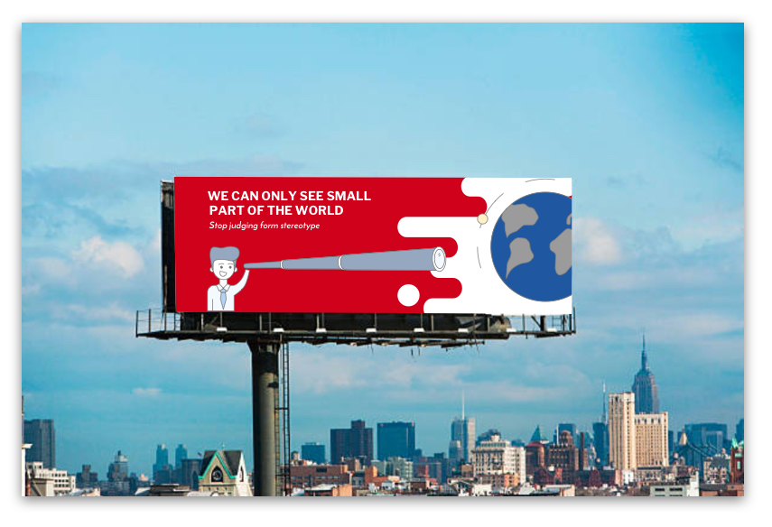
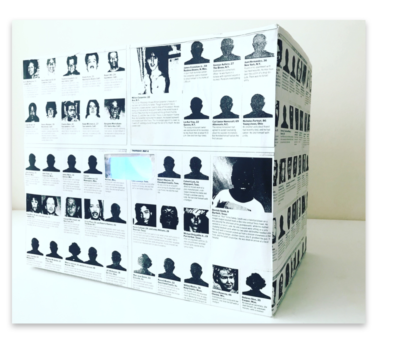
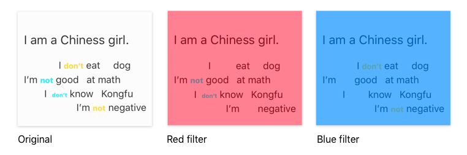

2D to 5D
1D - Domain
Anti - Intrinsic Bias
Intrinsic Bias is kind of “I just know mentalities.” I want to help people realize that their subconscious stereotypes are affecting their decision making, and try to help them avoid it.
2D - Graphic
- Wallet sized (3.5x2”)
- Poster-sized (30x40”)
- Billboard-sized (48x14’)
Card
Most people will feel wired when they first read the story, that is because they always think the most successful people are male, such as the doctor, lawyer, entrepreneur, etc. The business card aims to raise awareness that from the minutes we get information, bias begins to influences the way we think, although we don’t want to, we can’t avoid it.

Poster
In the picture is me, but people can only see a very blurry figure, and they can only tell from the picture it’s an Asian girl. And when people think about Asian girls, they think about Chinese girls. When people think about Chinese, they have a lot of unconscious biases such as Chinese eat dog, Chinese are all good at math, Chinese know Kongfu… However, will people think about me like that? I don’t know. This poster reflects a kind of mutual misunderstanding, a mutual bias.

Billboard
People have prejudices part of the reason is that the world they see is not big enough. Carlo Osvaldo says that he who never leaves his country is full of prejudices. People are like looking at the world through a telescope. What they can see is only part of the world.


3D - Object
Filter Box
People put on filter glasses of different colors and look into the box, and what they see will vary differently according to the color of the glasses, and the words will convey opposite meanings.


4D - Film
Unconscious bias works not only on people, but also on how people view objects. For example, we may think lipstick is a female object. But in fact, this kind of connection is also our usual stereotypes. I chose a random combination of a female object, a neutral object, and a male object that belonged to the same person.